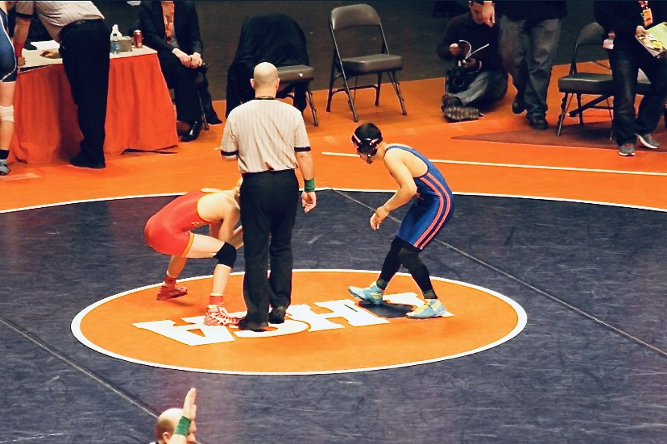

The story of my life is wild and incredible journey. It all started in the city of Chicago where I was born. When I was just two years old, my family and I moved to a nearby suburb, where I received most of my formal education. One of the turning points in my life was when I entered high school and joined the wrestling team.
Determined to succeed, I poured my heart and soul into the sport and worked tirelessly to achieve my goals. My hard work paid off when I was ranked 9th in the state and made it to the state tournament during my junior year. However, as fate would have it, I tore my ACL during my senior year, which made my aspirations on becoming a collegiate athlete almost nonexistence.
I persevered and went on to attend a nearby junior college where I joined their wrestling team (view school article) . I trained hard, kept a 4.0 GPA, and found myself competing at the national tournament, winning several matches. It was then that I received an incredible offer from a Division II school in Kentucky. With my academic and athletic scholarships, most of my tuition was taken care of. I graduated from Kentucky Wesleyan College as an All-Conference and Academic All-American wrestler and received a degree in communications in 2020.
My journey was far from over. The pandemic had hit, and finding a job after graduation was tough. I took up a sales job, but it wasn't my jam. So, I decided to make a bold move and relocate to Las Vegas to be with my girlfriend at the time (we met in college). Driving cross-country with all my belongings, I started a new life in Vegas and landed an exciting job as a Marketing Coordinator for a Video Production Company. I was even part of a paranormal investigation pivot starting Doc Phineas (from Pawn Stars) called Savant Squad!
However, as things go, my relationship ended, and I was once again at a crossroads. It was time to head back home to Chicago, but fate had other plans. One of my wrestling buddies from Kentucky was living in Seattle and offered to house me until I found a job and my own place. I decided to take the risk and redirected my GPS to Seattle. In just a month, I landed a job and rented my first apartment, which was nothing short of remarkable.
Seattle proved yet another turning point in my life. My friend from college was a day trader and investor. Naturally, I became curious and learned all about cryptocurrency and NFTs, which led me to investing profitably. I wanted to break into the crypto industry at the ground level but found out that coding experience was required for most positions. That's when I set my sights on learning Python. The journey was not easy, but I persevered and never gave up. I bought the "Python Crash Course" book (which ironically is used for this cohort), and although it took me ten tries to get through each section, I never gave up. Although I'm not a master programmer (yet), learning Python gave me invaluable mental and technical skills to pursue any programming language with confidence.
But just when I thought my life was on track, tragedy struck. My best friend from back home passed away in a car accident, and I realized that I needed to be close to family and friends. However, it was probably one of the hardest decisions of my life. I had created a comfortable life in Seattle from nothing, and having to give it up was demoralizing. Regardless, I made the decision to leave everything behind and move back home to be closer to my loved ones. I switched my perspective and looked at it as a golden opportunity to go all-in on this coding thing. which is how I ended up telling you my story on this website I created as part of my cohort pre-work for Coding Temple. Let the story continue...